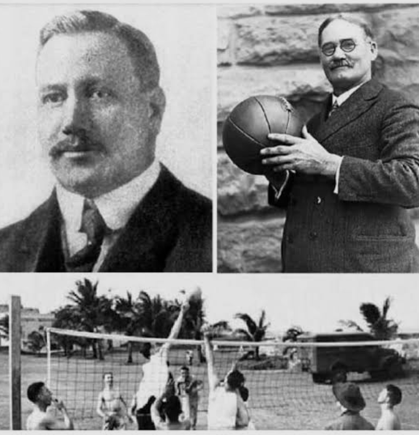
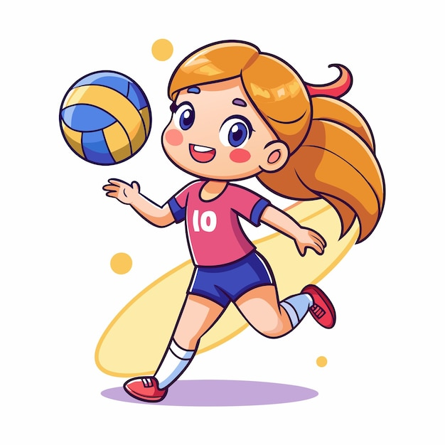

¿Quien invento el voleidol y en que año?
Fue inventado en 1895 por William G. Morgan, director de educacion fisica de la YMCA en Holyoke, Massachusetts Estabos Unidos. Originalmente llamado"mintonette", fue creado como una alternativa recreativa y menos intensa al baloncesto para mienbros veteranos de la asociacion, combinando elementos del tenis ,baloncesto,balonmano y beisbol.Zona de accion: la zona de ataque ,delantera ,cerca de la red para remates y bloqueoy zona de defenza /recepcion (tracera,detras de la linea de 3m) para recibir saque y defender.

Zona defenciva:es el conjunto de tecnicas destinadas a evitar que el balon toque el propio campotras un ataque rival basandose en la cordinacion entre el bloqueo y los jugadores del campo.Voleo de pelota baja: conocidos tambien como macheta o golpe de antebrazo,es un fundamento tecnico del voleibol ultilizado para resivir saque o defender balones que se encuentran por debajo de la cintura.primeros partidos del voleibol:El primer partido oficial de exhibición del voleibol se jugó en 1896 en el Springfield College (entonces llamado Escuela Internacional de Formación de la YMCA) en Massachusetts, Estados Unidos. El deporte fue inventado un año antes, en 1895, en la cercana ciudad de Holyoke, Massachusetts, por el profesor de educación física William G. Morgan..
Qué significa ✌ en voleibol? La mano izquierda indica la dirección en la que el bloqueador cerrará para el jugador que viene de su izquierda. La mano derecha indica la dirección para el jugador que viene de su derecha. Un dedo ☝🏼 significa bloqueo en línea , pero dos dedos ✌🏼 significa bloqueo en diagonal.
